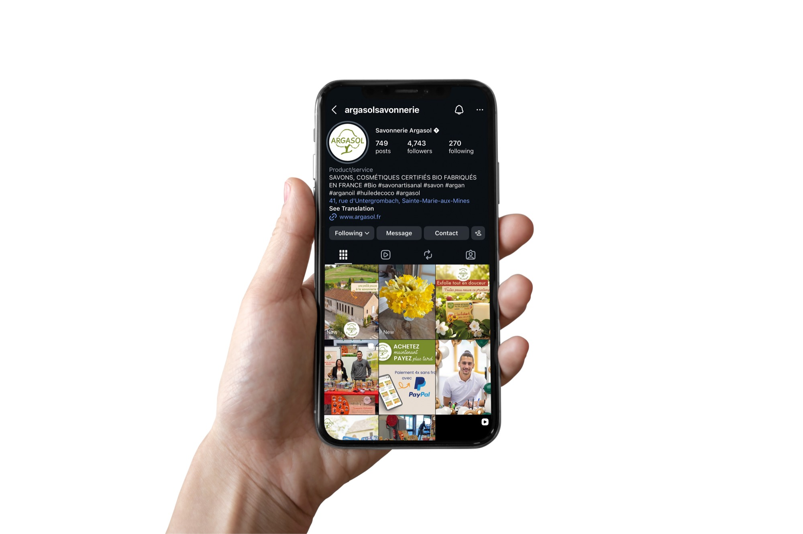
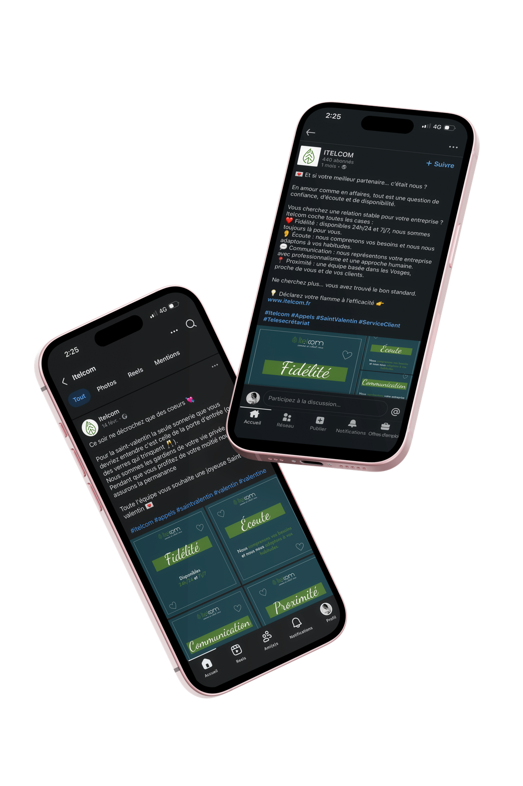

Stagiaire chargée de communication et graphisme • Le Petit Atelier Graphique, Saint-Dié-des-Vosges
Dix semaines au sein du Petit Atelier Graphique, à Saint-Dié-des-Vosges, pour concevoir et planifier les contenus de réseaux sociaux de plusieurs clients de l'agence.
- 10 semaines
- Agence de 2 personnes
- Clients : Argasol, Itelcom

Le contexte
L'agence
Fondée en 2009 à Saint-Dié-des-Vosges, Le Petit Atelier Graphique crée des identités visuelles, des supports print et des sites web, et gère les réseaux sociaux de TPE et PME vosgiennes.
Ma mission
Concevoir et planifier des contenus pour dynamiser la présence en ligne de plusieurs clients, en respectant l'identité et la stratégie de chacun.
Le point de départ
La stratégie et la charte éditoriale existaient déjà pour la plupart des clients. La création de contenus pour les réseaux sociaux constituait pour moi un exercice nouveau.
La méthode
Chaque mois, nous préparions le planning du mois suivant, en conservant une à deux semaines de marge pour la validation du client.
- S'approprier la marqueComprendre l'identité du client, ses enjeux de visibilité et le ton attendu par son audience.
- Assurer une veilleRepérer chez les concurrents les formats et les idées qui suscitent le plus d'engagement.
- RédigerLister les idées, rédiger un premier jet, puis l'affiner à l'aide de l'IA pour en améliorer la structure.
- Renseigner le planningChaque texte est renseigné dans le planning du Drive partagé, où ma tutrice le relit et le corrige.
- Créer les visuelsCarrousels sur Illustrator, stories sur Canva, retouche sur Lightroom, vidéos courtes sur CapCut.
- Faire validerLes publications passent dans un planning partagé avec le client, qui donne la validation finale.
Client n° 1
Installée à Sainte-Marie-aux-Mines, la marque mise sur l'authenticité, la saponification à froid et des produits 100 % biodégradables. L'objectif du plan de communication : accroître sa notoriété sur Facebook et Instagram.
Les contenus s'adressaient à trois personas :
Sur le plan visuel, une esthétique vive, en vert et orange, valorise les produits et le lieu de production. Je me suis rendue à la savonnerie pour réaliser les prises de vue et constituer une banque de contenus exploitable en stories, en publications et en Reels.


Client n° 2
Basée à Raon-l'Étape, Itelcom externalise les standards téléphoniques des entreprises, 24 heures sur 24 et 7 jours sur 7. L'enjeu : traduire la proximité et le professionnalisme de cet accueil téléphonique vosgien auprès d'une clientèle professionnelle.
Pour la Saint-Valentin, j'ai décliné la même idée sur deux réseaux : un ton plus formel sur LinkedIn, plus visuel et direct sur Facebook. Cette mission m'a montré qu'un planning ne se duplique pas d'un réseau à l'autre : le ton, la forme et l'horaire de publication doivent être adaptés.
Le bilan
Une méthode de travail que j'applique aujourd'hui à l'AFT'R : anticiper, adapter, organiser.
Anticiper
Un planning préparé un mois à l'avance, avec une marge pour la validation du client.
Adapter
À chaque client sa charte, son ton et ses cibles, et à chaque réseau ses codes.
Organiser
Suivi des tâches sous Notion, priorisation et points réguliers avec mes tuteurs pour tenir le rythme d'une agence.
Résultat : une banque de contenus prête à l'emploi et un planning éditorial validé. L'agence a conservé mes prises de vue pour de futures publications. Voir mon travail à l'AFT'R →
Rapport de stage
Mon rapport de stage de 2e année, en 54 pages. Cliquez sur une page ou utilisez les flèches pour le parcourir.